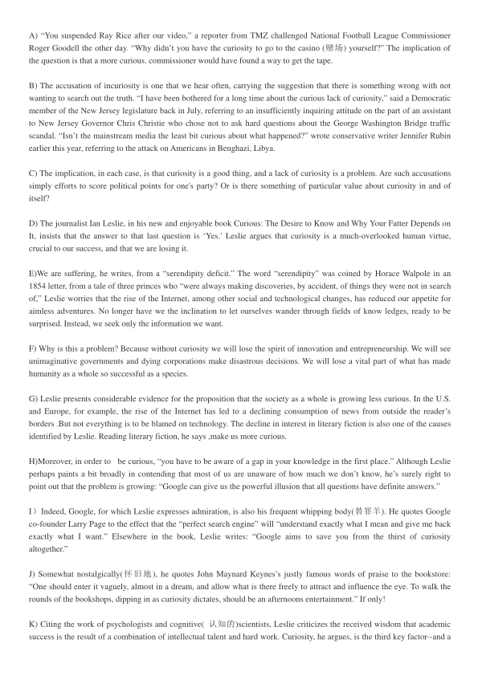
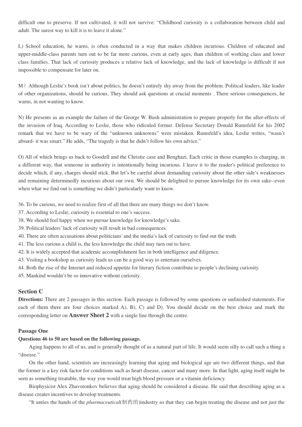
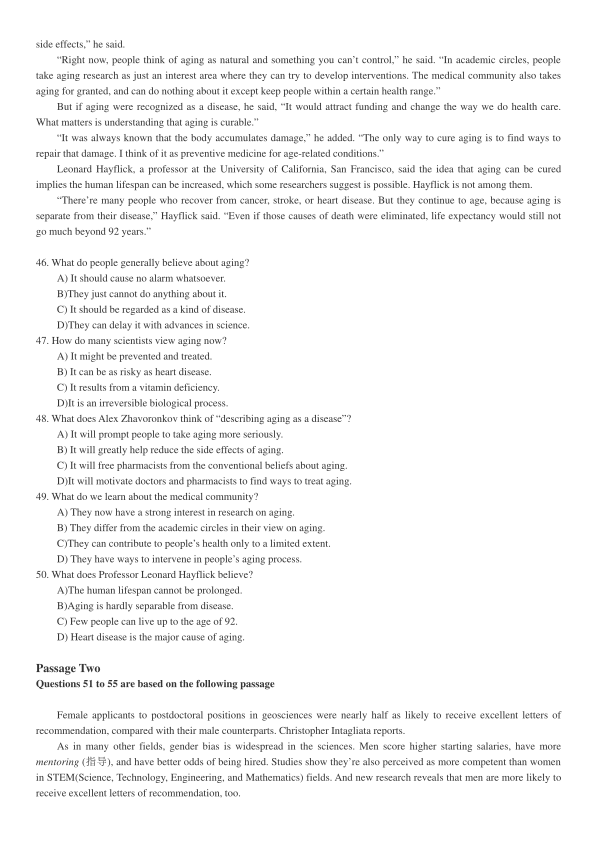
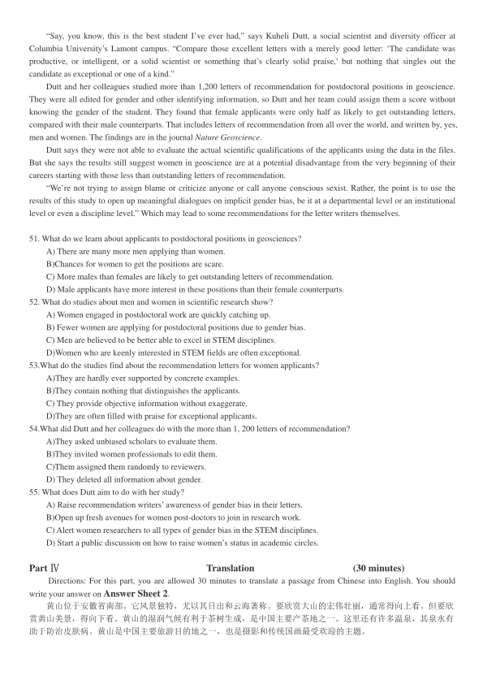

第 1 / 5 页

2017 年12 月大学英语四级考试真题(第3 套)
Part I
Writing
(30 minutes)
Directions: For this part, you are allowed 30 minutes to write a short essay on how to best handle the relationship
between doctors and patients. You should write at least 120 words but no more than 180 words.
Part II
Listening Comprehension
(25 minutes)
说明：由于2017 年12 月四级考试全国共考了2 套听力，本套真题听力与前2 套内容完全一样，只是顺序不一
样，因此在本套真题中不再重复出现。
Part Ⅲ
Reading Comprehension
( 40 minutes )
Section A
Directions: In this section, there is a passage with ten blanks. You are required to select one word for each blank from a list
of choices given in a word bank following the passage. Read the passage through carefully before making your choices.
Each choice in the bank is identified by a letter. Please mark the corresponding letter for each item on Answer Sheet 2
with a single line through the centre. You may not use any of the words in the bank more than once.
Questions 26 to 35 are based on the following passage.
We all know there exists a great void（空白）in the public educational system when it comes to
26 to STEM（Science,
Technology, Engineering and Mathematics）courses. One educator named Dori Roberts decided to do something to change
this system. Dori taught high school engineering for 11 years. She noticed there was a real void in quality STEM education
at all
27
of the public educational system. She said, “I started Engineering For Kids (EFK)after noticing a real lack of
math, science and engineering programs to 28 my own kids in”
She decided to start an afterschool program where children
29
in STEM-based competitions. The club grew quickly
and when it reached 180 members and the kids in the program won several state 30 , she decided to devote all her time to
cultivating and
31 it. The global business EFK was born.
Dori began operating EFK out of her Virginia home, which she then expanded to 32
recreation centers. Today, the
EFK program
33
over 144 branches in 32 states within the United States and in 21 countries. Sales have doubled from
$5 million in 2014 to $10 million in 2015,with 25 new branches planned for 2016. The EFK website states, “Our nation is
not
34
enough engineers. Our philosophy is to inspire kids at a young age to understand that engineering is a
great 35 .”
A）attracted
I）feeding
B）career
J）graduating
C）championships
K）interest
D）degrees
L）levels
E）developing
M）local
F）enroll
N）operates
G）exposure
O）participated
H）feasible
Section B
Directions: In this section, you are going to read a passage with ten statements attached to it. Each statement contains
information given in one of the paragraphs. Identify the paragraph from which the information is derived. You may choose a
paragraph more than once. Each paragraph is marked with a letter. Answer the questions by marking the corresponding
letter on Answer Sheet 2.
Why aren't you curious about what happened?
查看 / 复制本页文字
2017 年12 月大学英语四级考试真题(第3 套) Part I Writing (30 minutes) Directions: For this part, you are allowed 30 minutes to write a short essay on how to best handle the relationship between doctors and patients. You should write at least 120 words but no more than 180 words. Part II Listening Comprehension (25 minutes) 说明：由于2017 年12 月四级考试全国共考了2 套听力，本套真题听力与前2 套内容完全一样，只是顺序不一 样，因此在本套真题中不再重复出现。 Part Ⅲ Reading Comprehension ( 40 minutes ) Section A Directions: In this section, there is a passage with ten blanks. You are required to select one word for each blank from a list of choices given in a word bank following the passage. Read the passage through carefully before making your choices. Each choice in the bank is identified by a letter. Please mark the corresponding letter for each item on Answer Sheet 2 with a single line through the centre. You may not use any of the words in the bank more than once. Questions 26 to 35 are based on the following passage. We all know there exists a great void（空白）in the public educational system when it comes to 26 to STEM（Science, Technology, Engineering and Mathematics）courses. One educator named Dori Roberts decided to do something to change this system. Dori taught high school engineering for 11 years. She noticed there was a real void in quality STEM education at all 27 of the public educational system. She said, “I started Engineering For Kids (EFK)after noticing a real lack of math, science and engineering programs to 28 my own kids in” She decided to start an afterschool program where children 29 in STEM-based competitions. The club grew quickly and when it reached 180 members and the kids in the program won several state 30 , she decided to devote all her time to cultivating and 31 it. The global business EFK was born. Dori began operating EFK out of her Virginia home, which she then expanded to 32 recreation centers. Today, the EFK program 33 over 144 branches in 32 states within the United States and in 21 countries. Sales have doubled from $5 million in 2014 to $10 million in 2015,with 25 new branches planned for 2016. The EFK website states, “Our nation is not 34 enough engineers. Our philosophy is to inspire kids at a young age to understand that engineering is a great 35 .” A）attracted I）feeding B）career J）graduating C）championships K）interest D）degrees L）levels E）developing M）local F）enroll N）operates G）exposure O）participated H）feasible Section B Directions: In this section, you are going to read a passage with ten statements attached to it. Each statement contains information given in one of the paragraphs. Identify the paragraph from which the information is derived. You may choose a paragraph more than once. Each paragraph is marked with a letter. Answer the questions by marking the corresponding letter on Answer Sheet 2. Why aren't you curious about what happened?
第 2 / 5 页

A) “You suspended Ray Rice after our video,” a reporter from TMZ challenged National Football League Commissioner
Roger Goodell the other day. “Why didn’t you have the curiosity to go to the casino (赌场) yourself?” The implication of
the question is that a more curious. commissioner would have found a way to get the tape.
B) The accusation of incuriosity is one that we hear often, carrying the suggestion that there is something wrong with not
wanting to search out the truth. “I have been bothered for a long time about the curious lack of curiosity,” said a Democratic
member of the New Jersey legislature back in July, referring to an insufficiently inquiring attitude on the part of an assistant
to New Jersey Governor Chris Christie who chose not to ask hard questions about the George Washington Bridge traffic
scandal. “Isn’t the mainstream media the least bit curious about what happened?” wrote conservative writer Jennifer Rubin
earlier this year, referring to the attack on Americans in Benghazi, Libya.
C) The implication, in each case, is that curiosity is a good thing, and a lack of curiosity is a problem. Are such accusations
simply efforts to score political points for one's party? Or is there something of particular value about curiosity in and of
itself?
D) The journalist Ian Leslie, in his new and enjoyable book Curious: The Desire to Know and Why Your Fatter Depends on
It, insists that the answer to that last question is ‘Yes.’ Leslie argues that curiosity is a much-overlooked human virtue,
crucial to our success, and that we are losing it.
E)We are suffering, he writes, from a “serendipity deficit.” The word “serendipity” was coined by Horace Walpole in an
1854 letter, from a tale of three princes who “were always making discoveries, by accident, of things they were not in search
of,” Leslie worries that the rise of the Internet, among other social and technological changes, has reduced our appetite for
aimless adventures. No longer have we the inclination to let ourselves wander through fields of know ledges, ready to be
surprised. Instead, we seek only the information we want.
F) Why is this a problem? Because without curiosity we will lose the spirit of innovation and entrepreneurship. We will see
unimaginative governments and dying corporations make disastrous decisions. We will lose a vital part of what has made
humanity as a whole so successful as a species.
G) Leslie presents considerable evidence for the proposition that the society as a whole is growing less curious. In the U.S.
and Europe, for example, the rise of the Internet has led to a declining consumption of news from outside the reader’s
borders .But not everything is to be blamed on technology. The decline in interest in literary fiction is also one of the causes
identified by Leslie. Reading literary fiction, he says ,make us more curious.
H)Moreover, in order to
be curious, “you have to be aware of a gap in your knowledge in the first place.” Although Leslie
perhaps paints a bit broadly in contending that most of us are unaware of how much we don’t know, he’s surely right to
point out that the problem is growing: “Google can give us the powerful illusion that all questions have definite answers.”
I）Indeed, Google, for which Leslie expresses admiration, is also his frequent whipping body(替罪羊). He quotes Google
co-founder Larry Page to the effect that the “perfect search engine” will “understand exactly what I mean and give me back
exactly what I want.” Elsewhere in the book, Leslie writes: “Google aims to save you from the thirst of curiosity
altogether.”
J) Somewhat nostalgically(怀旧地), he quotes John Maynard Keynes’s justly famous words of praise to the bookstore:
“One should enter it vaguely, almost in a dream, and allow what is there freely to attract and influence the eye. To walk the
rounds of the bookshops, dipping in as curiosity dictates, should be an afternoons entertainment.” If only!
K) Citing the work of psychologists and cognitive( 认知的)scientists, Leslie criticizes the received wisdom that academic
success is the result of a combination of intellectual talent and hard work. Curiosity, he argues, is the third key factor--and a
查看 / 复制本页文字
A) “You suspended Ray Rice after our video,” a reporter from TMZ challenged National Football League Commissioner Roger Goodell the other day. “Why didn’t you have the curiosity to go to the casino (赌场) yourself?” The implication of the question is that a more curious. commissioner would have found a way to get the tape. B) The accusation of incuriosity is one that we hear often, carrying the suggestion that there is something wrong with not wanting to search out the truth. “I have been bothered for a long time about the curious lack of curiosity,” said a Democratic member of the New Jersey legislature back in July, referring to an insufficiently inquiring attitude on the part of an assistant to New Jersey Governor Chris Christie who chose not to ask hard questions about the George Washington Bridge traffic scandal. “Isn’t the mainstream media the least bit curious about what happened?” wrote conservative writer Jennifer Rubin earlier this year, referring to the attack on Americans in Benghazi, Libya. C) The implication, in each case, is that curiosity is a good thing, and a lack of curiosity is a problem. Are such accusations simply efforts to score political points for one's party? Or is there something of particular value about curiosity in and of itself? D) The journalist Ian Leslie, in his new and enjoyable book Curious: The Desire to Know and Why Your Fatter Depends on It, insists that the answer to that last question is ‘Yes.’ Leslie argues that curiosity is a much-overlooked human virtue, crucial to our success, and that we are losing it. E)We are suffering, he writes, from a “serendipity deficit.” The word “serendipity” was coined by Horace Walpole in an 1854 letter, from a tale of three princes who “were always making discoveries, by accident, of things they were not in search of,” Leslie worries that the rise of the Internet, among other social and technological changes, has reduced our appetite for aimless adventures. No longer have we the inclination to let ourselves wander through fields of know ledges, ready to be surprised. Instead, we seek only the information we want. F) Why is this a problem? Because without curiosity we will lose the spirit of innovation and entrepreneurship. We will see unimaginative governments and dying corporations make disastrous decisions. We will lose a vital part of what has made humanity as a whole so successful as a species. G) Leslie presents considerable evidence for the proposition that the society as a whole is growing less curious. In the U.S. and Europe, for example, the rise of the Internet has led to a declining consumption of news from outside the reader’s borders .But not everything is to be blamed on technology. The decline in interest in literary fiction is also one of the causes identified by Leslie. Reading literary fiction, he says ,make us more curious. H)Moreover, in order to be curious, “you have to be aware of a gap in your knowledge in the first place.” Although Leslie perhaps paints a bit broadly in contending that most of us are unaware of how much we don’t know, he’s surely right to point out that the problem is growing: “Google can give us the powerful illusion that all questions have definite answers.” I）Indeed, Google, for which Leslie expresses admiration, is also his frequent whipping body(替罪羊). He quotes Google co-founder Larry Page to the effect that the “perfect search engine” will “understand exactly what I mean and give me back exactly what I want.” Elsewhere in the book, Leslie writes: “Google aims to save you from the thirst of curiosity altogether.” J) Somewhat nostalgically(怀旧地), he quotes John Maynard Keynes’s justly famous words of praise to the bookstore: “One should enter it vaguely, almost in a dream, and allow what is there freely to attract and influence the eye. To walk the rounds of the bookshops, dipping in as curiosity dictates, should be an afternoons entertainment.” If only! K) Citing the work of psychologists and cognitive( 认知的)scientists, Leslie criticizes the received wisdom that academic success is the result of a combination of intellectual talent and hard work. Curiosity, he argues, is the third key factor--and a
第 3 / 5 页

difficult one to preserve. If not cultivated, it will not survive: “Childhood curiosity is a collaboration between child and
adult. The surest way to kill it is to leave it alone.”
L) School education, he warns, is often conducted in a way that makes children incurious. Children of educated and
upper-middle-class parents turn out to be far more curious, even at early ages, than children of working class and lower
class families. That lack of curiosity produces a relative lack of knowledge, and the lack of knowledge is difficult if not
impossible to compensate for later on.
M）Although Leslie’s book isn’t about politics, he doesn’t entirely shy away from the problem. Political leaders, like leader
of other organizations, should be curious. They should ask questions at crucial moments . There serious consequences, he
warns, in not wanting to know.
N) He presents as an example the failure of the George W. Bush administration to prepare properly for the after-effects of
the invasion of Iraq. According to Leslie, those who ridiculed former. Defense Secretary Donald Rumsfeld for his 2002
remark that we have to be wary of the “unknown unknowns” were mistaken. Rumsfeld’s idea, Leslie writes, “wasn’t
absurd- it was smart.” He adds, “The tragedy is that he didn’t follow his own advice.”
O) All of which brings us back to Goodell and the Christie case and Benghazi. Each critic in those examples is charging, in
a different way, that someone in authority is intentionally being incurious. I leave it to the reader's political preference to
decide which, if any, charges should stick. But let’s be careful about demanding curiosity about the other side’s weaknesses
and remaining determinedly incurious about our own. We should be delighted to pursue knowledge for its own sake--even
when what we find out is something we didn’t particularly want to know.
36. To be curious, we need to realize first of all that there are many things we don’t know.
37. According to Leslie, curiosity is essential to one’s success.
38. We should feel happy when we pursue knowledge for knowledge’s sake.
39. Political leaders’ lack of curiosity will result in bad consequences.
40. There are often accusations about politicians' and the media’s lack of curiosity to find out the truth.
41. The less curious a child is, the less knowledge the child may turn out to have.
42. It is widely accepted that academic accomplishment lies in both intelligence and diligence.
43. Visiting a bookshop as curiosity leads us can be a good way to entertain ourselves.
44. Both the rise of the Internet and reduced appetite for literary fiction contribute to people’s declining curiosity.
45. Mankind wouldn’t be so innovative without curiosity.
Section C
Directions: There are 2 passages in this section. Each passage is followed by some questions or unfinished statements. For
each of them there are four choices marked A), B), C) and D). You should decide on the best choice and mark the
corresponding letter on Answer Sheet 2 with a single line through the centre.
Passage One
Questions 46 to 50 are based on the following passage.
Aging happens to all of us, and is generally thought of as a natural part of life. It would seem silly to call such a thing a
“disease.”
On the other hand, scientists are increasingly learning that aging and biological age are two different things, and that
the former is a key risk factor for conditions such as heart disease, cancer and many more. In that light, aging itself might be
seen as something treatable, the way you would treat high blood pressure or a vitamin deficiency.
Biophysicist Alex Zhavoronkov believes that aging should be considered a disease. He said that describing aging as a
disease creates incentives to develop treatments.
“It unties the hands of the pharmaceutical(制药的)industry so that they can begin treating the disease and not just the
查看 / 复制本页文字
difficult one to preserve. If not cultivated, it will not survive: “Childhood curiosity is a collaboration between child and adult. The surest way to kill it is to leave it alone.” L) School education, he warns, is often conducted in a way that makes children incurious. Children of educated and upper-middle-class parents turn out to be far more curious, even at early ages, than children of working class and lower class families. That lack of curiosity produces a relative lack of knowledge, and the lack of knowledge is difficult if not impossible to compensate for later on. M）Although Leslie’s book isn’t about politics, he doesn’t entirely shy away from the problem. Political leaders, like leader of other organizations, should be curious. They should ask questions at crucial moments . There serious consequences, he warns, in not wanting to know. N) He presents as an example the failure of the George W. Bush administration to prepare properly for the after-effects of the invasion of Iraq. According to Leslie, those who ridiculed former. Defense Secretary Donald Rumsfeld for his 2002 remark that we have to be wary of the “unknown unknowns” were mistaken. Rumsfeld’s idea, Leslie writes, “wasn’t absurd- it was smart.” He adds, “The tragedy is that he didn’t follow his own advice.” O) All of which brings us back to Goodell and the Christie case and Benghazi. Each critic in those examples is charging, in a different way, that someone in authority is intentionally being incurious. I leave it to the reader's political preference to decide which, if any, charges should stick. But let’s be careful about demanding curiosity about the other side’s weaknesses and remaining determinedly incurious about our own. We should be delighted to pursue knowledge for its own sake--even when what we find out is something we didn’t particularly want to know. 36. To be curious, we need to realize first of all that there are many things we don’t know. 37. According to Leslie, curiosity is essential to one’s success. 38. We should feel happy when we pursue knowledge for knowledge’s sake. 39. Political leaders’ lack of curiosity will result in bad consequences. 40. There are often accusations about politicians' and the media’s lack of curiosity to find out the truth. 41. The less curious a child is, the less knowledge the child may turn out to have. 42. It is widely accepted that academic accomplishment lies in both intelligence and diligence. 43. Visiting a bookshop as curiosity leads us can be a good way to entertain ourselves. 44. Both the rise of the Internet and reduced appetite for literary fiction contribute to people’s declining curiosity. 45. Mankind wouldn’t be so innovative without curiosity. Section C Directions: There are 2 passages in this section. Each passage is followed by some questions or unfinished statements. For each of them there are four choices marked A), B), C) and D). You should decide on the best choice and mark the corresponding letter on Answer Sheet 2 with a single line through the centre. Passage One Questions 46 to 50 are based on the following passage. Aging happens to all of us, and is generally thought of as a natural part of life. It would seem silly to call such a thing a “disease.” On the other hand, scientists are increasingly learning that aging and biological age are two different things, and that the former is a key risk factor for conditions such as heart disease, cancer and many more. In that light, aging itself might be seen as something treatable, the way you would treat high blood pressure or a vitamin deficiency. Biophysicist Alex Zhavoronkov believes that aging should be considered a disease. He said that describing aging as a disease creates incentives to develop treatments. “It unties the hands of the pharmaceutical(制药的)industry so that they can begin treating the disease and not just the
第 4 / 5 页

side effects,” he said.
“Right now, people think of aging as natural and something you can’t control,” he said. “In academic circles, people
take aging research as just an interest area where they can try to develop interventions. The medical community also takes
aging for granted, and can do nothing about it except keep people within a certain health range.”
But if aging were recognized as a disease, he said, “It would attract funding and change the way we do health care.
What matters is understanding that aging is curable.”
“It was always known that the body accumulates damage,” he added. “The only way to cure aging is to find ways to
repair that damage. I think of it as preventive medicine for age-related conditions.”
Leonard Hayflick, a professor at the University of California, San Francisco, said the idea that aging can be cured
implies the human lifespan can be increased, which some researchers suggest is possible. Hayflick is not among them.
“There’re many people who recover from cancer, stroke, or heart disease. But they continue to age, because aging is
separate from their disease,” Hayflick said. “Even if those causes of death were eliminated, life expectancy would still not
go much beyond 92 years.”
46. What do people generally believe about aging?
A) It should cause no alarm whatsoever.
B)They just cannot do anything about it.
C) It should be regarded as a kind of disease.
D)They can delay it with advances in science.
47. How do many scientists view aging now?
A) It might be prevented and treated.
B) It can be as risky as heart disease.
C) It results from a vitamin deficiency.
D)It is an irreversible biological process.
48. What does Alex Zhavoronkov think of “describing aging as a disease”?
A) It will prompt people to take aging more seriously.
B) It will greatly help reduce the side effects of aging.
C) It will free pharmacists from the conventional beliefs about aging.
D)It will motivate doctors and pharmacists to find ways to treat aging.
49. What do we learn about the medical community?
A) They now have a strong interest in research on aging.
B) They differ from the academic circles in their view on aging.
C)They can contribute to people’s health only to a limited extent.
D) They have ways to intervene in people’s aging process.
50. What does Professor Leonard Hayflick believe?
A)The human lifespan cannot be prolonged.
B)Aging is hardly separable from disease.
C) Few people can live up to the age of 92.
D) Heart disease is the major cause of aging.
Passage Two
Questions 51 to 55 are based on the following passage
Female applicants to postdoctoral positions in geosciences were nearly half as likely to receive excellent letters of
recommendation, compared with their male counterparts. Christopher Intagliata reports.
As in many other fields, gender bias is widespread in the sciences. Men score higher starting salaries, have more
mentoring (指导), and have better odds of being hired. Studies show they’re also perceived as more competent than women
in STEM(Science, Technology, Engineering, and Mathematics) fields. And new research reveals that men are more likely to
receive excellent letters of recommendation, too.
查看 / 复制本页文字
side effects,” he said. “Right now, people think of aging as natural and something you can’t control,” he said. “In academic circles, people take aging research as just an interest area where they can try to develop interventions. The medical community also takes aging for granted, and can do nothing about it except keep people within a certain health range.” But if aging were recognized as a disease, he said, “It would attract funding and change the way we do health care. What matters is understanding that aging is curable.” “It was always known that the body accumulates damage,” he added. “The only way to cure aging is to find ways to repair that damage. I think of it as preventive medicine for age-related conditions.” Leonard Hayflick, a professor at the University of California, San Francisco, said the idea that aging can be cured implies the human lifespan can be increased, which some researchers suggest is possible. Hayflick is not among them. “There’re many people who recover from cancer, stroke, or heart disease. But they continue to age, because aging is separate from their disease,” Hayflick said. “Even if those causes of death were eliminated, life expectancy would still not go much beyond 92 years.” 46. What do people generally believe about aging? A) It should cause no alarm whatsoever. B)They just cannot do anything about it. C) It should be regarded as a kind of disease. D)They can delay it with advances in science. 47. How do many scientists view aging now? A) It might be prevented and treated. B) It can be as risky as heart disease. C) It results from a vitamin deficiency. D)It is an irreversible biological process. 48. What does Alex Zhavoronkov think of “describing aging as a disease”? A) It will prompt people to take aging more seriously. B) It will greatly help reduce the side effects of aging. C) It will free pharmacists from the conventional beliefs about aging. D)It will motivate doctors and pharmacists to find ways to treat aging. 49. What do we learn about the medical community? A) They now have a strong interest in research on aging. B) They differ from the academic circles in their view on aging. C)They can contribute to people’s health only to a limited extent. D) They have ways to intervene in people’s aging process. 50. What does Professor Leonard Hayflick believe? A)The human lifespan cannot be prolonged. B)Aging is hardly separable from disease. C) Few people can live up to the age of 92. D) Heart disease is the major cause of aging. Passage Two Questions 51 to 55 are based on the following passage Female applicants to postdoctoral positions in geosciences were nearly half as likely to receive excellent letters of recommendation, compared with their male counterparts. Christopher Intagliata reports. As in many other fields, gender bias is widespread in the sciences. Men score higher starting salaries, have more mentoring (指导), and have better odds of being hired. Studies show they’re also perceived as more competent than women in STEM(Science, Technology, Engineering, and Mathematics) fields. And new research reveals that men are more likely to receive excellent letters of recommendation, too.
第 5 / 5 页

“Say, you know, this is the best student I’ve ever had,” says Kuheli Dutt, a social scientist and diversity officer at
Columbia University’s Lamont campus. “Compare those excellent letters with a merely good letter: ‘The candidate was
productive, or intelligent, or a solid scientist or something that’s clearly solid praise,’ but nothing that singles out the
candidate as exceptional or one of a kind.”
Dutt and her colleagues studied more than 1,200 letters of recommendation for postdoctoral positions in geoscience.
They were all edited for gender and other identifying information, so Dutt and her team could assign them a score without
knowing the gender of the student. They found that female applicants were only half as likely to get outstanding letters,
compared with their male counterparts. That includes letters of recommendation from all over the world, and written by, yes,
men and women. The findings are in the journal Nature Geoscience.
Dutt says they were not able to evaluate the actual scientific qualifications of the applicants using the data in the files.
But she says the results still suggest women in geoscience are at a potential disadvantage from the very beginning of their
careers starting with those less than outstanding letters of recommendation.
“We’re not trying to assign blame or criticize anyone or call anyone conscious sexist. Rather, the point is to use the
results of this study to open up meaningful dialogues on implicit gender bias, be it at a departmental level or an institutional
level or even a discipline level.” Which may lead to some recommendations for the letter writers themselves.
51. What do we learn about applicants to postdoctoral positions in geosciences?
A) There are many more men applying than women.
B)Chances for women to get the positions are scare.
C) More males than females are likely to get outstanding letters of recommendation.
D) Male applicants have more interest in these positions than their female counterparts.
52. What do studies about men and women in scientific research show?
A) Women engaged in postdoctoral work are quickly catching up.
B) Fewer women are applying for postdoctoral positions due to gender bias.
C) Men are believed to be better able to excel in STEM disciplines.
D)Women who are keenly interested in STEM fields are often exceptional.
53.What do the studies find about the recommendation letters for women applicants?
A)They are hardly ever supported by concrete examples.
B)They contain nothing that distinguishes the applicants.
C) They provide objective information without exaggerate.
D)They are often filled with praise for exceptional applicants.
54.What did Dutt and her colleagues do with the more than 1, 200 letters of recommendation?
A)They asked unbiased scholars to evaluate them.
B)They invited women professionals to edit them.
C)Them assigned them randomly to reviewers.
D) They deleted all information about gender.
55. What does Dutt aim to do with her study?
A) Raise recommendation writers’ awareness of gender bias in their letters.
B)Open up fresh avenues for women post-doctors to join in research work.
C) Alert women researchers to all types of gender bias in the STEM disciplines.
D) Start a public discussion on how to raise women’s status in academic circles.
Part Ⅳ
Translation
(30 minutes)
Directions: For this part, you are allowed 30 minutes to translate a passage from Chinese into English. You should
write your answer on Answer Sheet 2.
黄山位于安徽省南部。它风景独特，尤以其日出和云海著称。要欣赏大山的宏伟壮丽，通常得向上看。但要欣
赏黄山美景，得向下看。黄山的湿润气候有利于茶树生成，是中国主要产茶地之一。这里还有许多温泉，其泉水有
助于防治皮肤病。黄山是中国主要旅游目的地之一，也是摄影和传统国画最受欢迎的主题。
查看 / 复制本页文字
“Say, you know, this is the best student I’ve ever had,” says Kuheli Dutt, a social scientist and diversity officer at Columbia University’s Lamont campus. “Compare those excellent letters with a merely good letter: ‘The candidate was productive, or intelligent, or a solid scientist or something that’s clearly solid praise,’ but nothing that singles out the candidate as exceptional or one of a kind.” Dutt and her colleagues studied more than 1,200 letters of recommendation for postdoctoral positions in geoscience. They were all edited for gender and other identifying information, so Dutt and her team could assign them a score without knowing the gender of the student. They found that female applicants were only half as likely to get outstanding letters, compared with their male counterparts. That includes letters of recommendation from all over the world, and written by, yes, men and women. The findings are in the journal Nature Geoscience. Dutt says they were not able to evaluate the actual scientific qualifications of the applicants using the data in the files. But she says the results still suggest women in geoscience are at a potential disadvantage from the very beginning of their careers starting with those less than outstanding letters of recommendation. “We’re not trying to assign blame or criticize anyone or call anyone conscious sexist. Rather, the point is to use the results of this study to open up meaningful dialogues on implicit gender bias, be it at a departmental level or an institutional level or even a discipline level.” Which may lead to some recommendations for the letter writers themselves. 51. What do we learn about applicants to postdoctoral positions in geosciences? A) There are many more men applying than women. B)Chances for women to get the positions are scare. C) More males than females are likely to get outstanding letters of recommendation. D) Male applicants have more interest in these positions than their female counterparts. 52. What do studies about men and women in scientific research show? A) Women engaged in postdoctoral work are quickly catching up. B) Fewer women are applying for postdoctoral positions due to gender bias. C) Men are believed to be better able to excel in STEM disciplines. D)Women who are keenly interested in STEM fields are often exceptional. 53.What do the studies find about the recommendation letters for women applicants? A)They are hardly ever supported by concrete examples. B)They contain nothing that distinguishes the applicants. C) They provide objective information without exaggerate. D)They are often filled with praise for exceptional applicants. 54.What did Dutt and her colleagues do with the more than 1, 200 letters of recommendation? A)They asked unbiased scholars to evaluate them. B)They invited women professionals to edit them. C)Them assigned them randomly to reviewers. D) They deleted all information about gender. 55. What does Dutt aim to do with her study? A) Raise recommendation writers’ awareness of gender bias in their letters. B)Open up fresh avenues for women post-doctors to join in research work. C) Alert women researchers to all types of gender bias in the STEM disciplines. D) Start a public discussion on how to raise women’s status in academic circles. Part Ⅳ Translation (30 minutes) Directions: For this part, you are allowed 30 minutes to translate a passage from Chinese into English. You should write your answer on Answer Sheet 2. 黄山位于安徽省南部。它风景独特，尤以其日出和云海著称。要欣赏大山的宏伟壮丽，通常得向上看。但要欣 赏黄山美景，得向下看。黄山的湿润气候有利于茶树生成，是中国主要产茶地之一。这里还有许多温泉，其泉水有 助于防治皮肤病。黄山是中国主要旅游目的地之一，也是摄影和传统国画最受欢迎的主题。